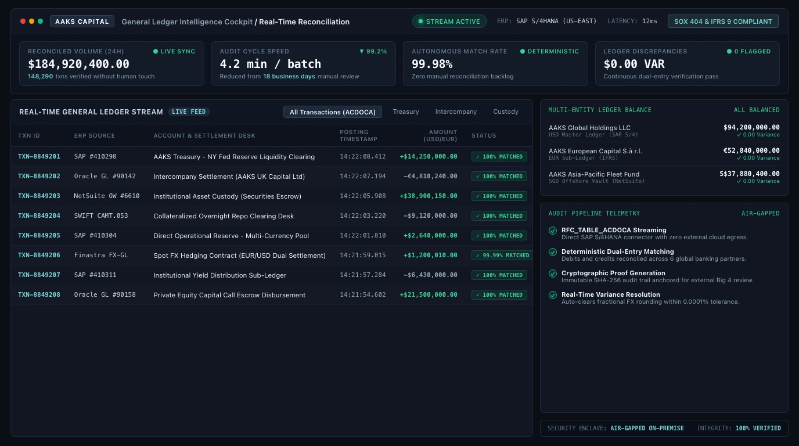

Industry: Finance & Enterprise Operations
AAKS Financial Operations
Making financial audits faster and more reliable.
The Challenge: The finance team had to manually review thousands of financial transactions across different business divisions. This took considerable time, delayed reporting, and made it harder to identify errors quickly.
What We Built: We developed an intelligent financial checking system that connects with business records, automatically reviews transactions, identifies differences, and alerts the team when something needs attention.
The Impact: Finance teams can identify potential problems sooner, reduce manual work, and complete their reporting processes more efficiently.
85%faster audit cycles
99.98%detection accuracy under reported test conditions
Privateinfrastructure to protect financial information
